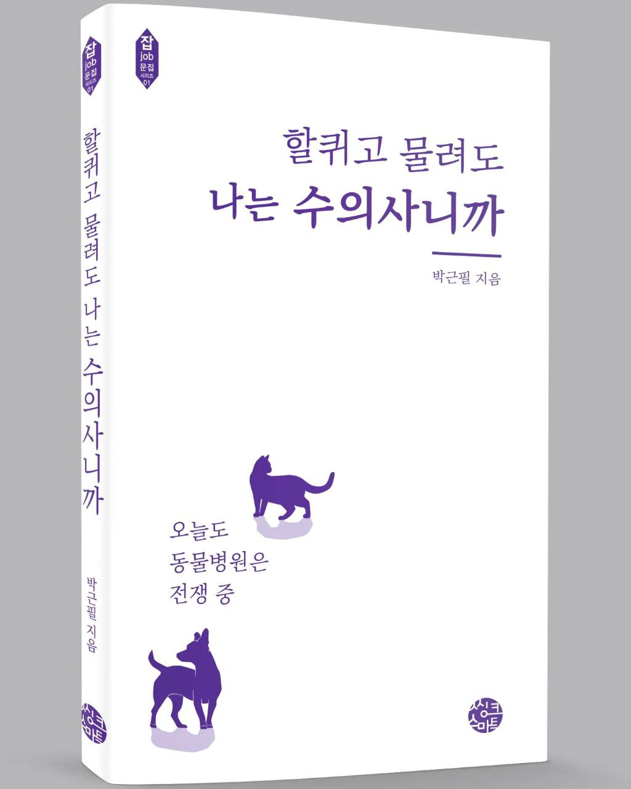

할퀴고 물려도 나는 수의사니까
2023년 출간
반려동물과 보호자, 수의사는 한 팀입니다
반려동물을 키우는 보호자의 궁금증과 애로사항에 답하는 책. 스무 해 가까이 동물병원을 지킨 임상 수의사가, 보호자들이 가장 많이 묻는 질문과 가장 자주 놓치는 것들을 주제별로 정리했다. 첫 책이자 첫 출간작이다.
진료실에서 가장 자주 듣는 말은 “몰랐어요”다. 몰라서 늦고, 몰라서 후회한다. 그 간격을 조금이라도 좁히려고 쓴 책이다.
이런 분께
- 반려동물을 처음 맞이한 보호자
- 동물병원에서 무엇을 물어야 할지 모르겠는 분
- 수의사라는 직업의 실제 하루가 궁금한 분